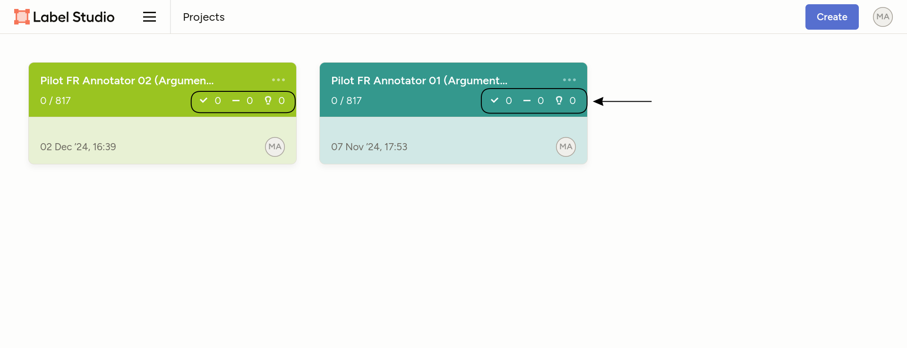
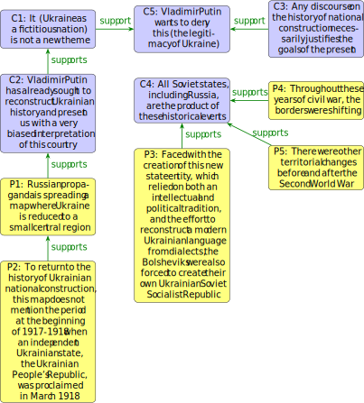
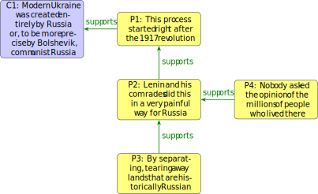
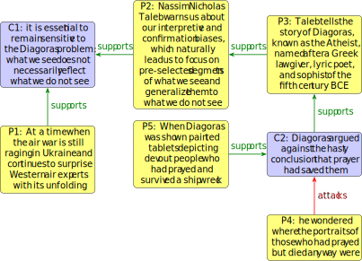

Argumentation Mining in News Articles Related to the War in Ukraine
Please visualize this guidelines in a desktop or laptop screen, not in a mobile device. If you are not able to visualize the images or the videos shown in this page later, consider opening the page in incognito mode or using another browser.
The purpose of this annotation task is to identify claims and premises in news articles related to the war in Ukraine, as well as the relations between them. We define this concepts below.
Sensitive Content Advisory: The articles selected for annotation may contain sensitive and potentially distressing content. Some texts include graphic descriptions of violence, war crimes, and sexual assault. We recognize that exposure to such material can be emotionally challenging. Annotators are encouraged to prioritize their well-being, therefore if you feel that the content may be too overwhelming or distressing, it is best that you do not participate in this annotation task. If you choose to proceed, please take breaks as needed.
Argument Mining Definitions
In this section, we provide definitions of the concepts related to this annotation task along with examples to illustrate them.
Consider Example 1, which presents an argument about the military aid to Ukraine. The writer argues whether the international community should increase military aid to Ukraine, providing reasons in favor and against this claim.
While some argue that increased military aid to Ukraine is essential, as it helps them defend their sovereignty against Russian aggression, others caution that such support could lead to a dangerous escalation of the conflict. Providing Ukraine with advanced weaponry, they claim, serves as a deterrent, it discourages further Russian advances. However, critics warn that more aid might provoke Russia to retaliate more aggressively, it can potentially draw NATO members into direct conflict. Nonetheless, proponents believe that a strong response is necessary because failure to support Ukraine might embolden other authoritarian regimes.
Elementary Discourse Units (EDUs)
To identify the different components in an argument we need to divide the text in segments called EDUs. An EDU is a self-contained unit of text that conveys a single coherent piece of information. EDUs can be a full sentence or a sentence's clause. That is, an EDU must have a subject and a predicate. The predicate must contain a verb. For instance, in the sentence "Providing Ukraine with advanced weaponry, they claim, serves as a deterrent", the subject is "Providing Ukraine with advanced weaponry" and the predicate is "serves as a deterrent". Example 2 delimits the EDUs between square brackets.
While some argue that [increased military aid to Ukraine is essential], as [it helps them defend their sovereignty against Russian aggression], others caution that such [support could lead to a dangerous escalation of the conflict]. [Providing Ukraine with advanced weaponry, they claim, serves as a deterrent], [it discourages further Russian advances]. However, critics warn that [more aid might provoke Russia to retaliate more aggressively], [it can potentially draw NATO members into direct conflict]. Nonetheless, proponents believe that [a strong response is necessary] because [failure to support Ukraine might embolden other authoritarian regimes].
Note that not all parts of text have to be part of an EDU. Punctuation marks, conjunctions, and transitional words are often excluded since they don't belong to one segment or another. This is the case for the words "while", "as", "however", "nonetheless", and "because" in Example 2. Also, pieces of text that state indirect speech can be excluded. For instance, the phrases "some argue that", "others caution that", and "proponents believe that" are not part of the EDUs in Example 2. An exception is the phrase "they claim" in "Providing Ukraine with advanced weaponry, they claim, serves as a deterrent". Leaving it out would split the EDU in two parts that do not convey a coherent meaning. Another exception arrises when excluding the indirect speech phrase would result in an meaningless EDU. In Example 3, the phrase "The Kremlin leader justifies" might be considered indirect speech, but removing it would leave the EDU without a clear subject.
Argument Components
There are two types of components in an argument:
- Claim: A claim is a statement that the speaker or writer wants the audience to accept.
- Premise: A premise is a reason or piece of evidence that the arguer puts forward to persuade the audience to accept or refute a statement. Premises form the basis upon which the conclusion (i.e., claim) is built. A premise can correspond to facts, statistics, quotations, reports, examples, findings, physical evidence, or other reasoning methods
In this study EDUs must be annotated as a claim or a premise. Therefore a sentence can contain several argument components. Claims and premises do not overlap, a piece of text can be annotated as a claim or a premise, but not both at the same time. Also, sometimes an EDU does NOT present a stance, assertion, or justification related to any argument, in this cases the EDU should NOT be annotated as a claim or a premise. This is usually the case for the questions posed by the journalist.
Example 4 shows the claims and premises in the argument.
While some argue that [increased military aid to Ukraine is essential], as [it helps them defend their sovereignty against Russian aggression], others caution that such [support could lead to a dangerous escalation of the conflict]. [Providing Ukraine with advanced weaponry, they claim, serves as a deterrent], [it discourages further Russian advances]. However, critics warn that [more aid might provoke Russia to retaliate more aggressively], [it can potentially draw NATO members into direct conflict]. Nonetheless, proponents believe that [a strong response is necessary] because [failure to support Ukraine might embolden other authoritarian regimes].
There are indicators that can help to identify claims and premises. For instance, claims can be introduced by phrases such as "I believe", "I think", "I am in favor of", "I do not believe", "for this reason", "however", "nonetheless", and "so". This is the case of the phrase "Nonetheless, proponents believe that a strong response is necessary" in Example 3. Premises can be introduced by phrases such as "because", "for example", "since". This is the case of the phrase "a strong response is necessary because failure to support Ukraine might embolden other authoritarian regimes" in the example. This is not an exhaustive list, other indicators can be used to identify claims and premises. Also, claims and premises can be introduced without any indicator.
An argument can contain multiple premises linked to a claim. A premise does not exist in isolation, it is always supporting or attacking a claim or premise, while a claim can exist without any premises. The claim can appear at the beginning, at the end, or in the middle of the argument. For instance, an argument can follow these structures:
- Premise, premise, premise, therefore Claim
- Claim because Premise
- In my judgment, Claim
The ongoing conflict has resulted in severe civilian casualties, and has caused international trade disruptions; therefore, a diplomatic resolution is urgently needed.
Ukraine deserves international support because it is defending its sovereignty against aggression.
In my judgment, further sanctions on Russia will be ineffective at changing its actions in Ukraine.
Notice that all claims and premises in the past examples have a subject and a predicate because they must be EDUs. The following are examples of text spans that are not claims or premises because they are not EDUs:
The next pieces of text lack a verb, therefore they do not have a predicate and cannot be considered EDUs.
- The desire to "denazify" countries.
- The Soviet flag: the cherry on top of this propaganda cake.
- A military aid worth £50 million and humanitarian aid worth £16 million.
The next pieces of text are not claims or premises because they contain several EDUs. They should be broken down into smaller segments.
- The Ukrainian Ministry of Defense posted a video on Twitter on Friday, February 25, supposedly showing a Russian plane shot down by Ukrainian forces. These are in fact images from the video game Digital Combat Simulator, as demonstrated by a BBC journalist.
- The emergence of this “Babushka Z” must have delighted him. Her performance glorifies the old generation. This is one more opportunity for Vladimir Putin to push Russians to live in the past.
They should be split into smaller segments to be annotated as claims or premises in the following way:
- [The Ukrainian Ministry of Defense posted a video on Twitter on Friday, February 25, supposedly showing a Russian plane shot down by Ukrainian forces]. [These are in fact images from the video game Digital Combat Simulator], as demonstrated by a BBC journalist.
- [The emergence of this “Babushka Z” must have delighted him]. [Her performance glorifies the old generation]. [This is one more opportunity for Vladimir Putin to push Russians to live in the past].
Argument Relations
Argument relations describe the connections between different elements within an argument or between multiple arguments. We consider two main types of argument relations:
- Support: A support relation exists between two elements when one element provides evidence, reasons, or justifications for the other element.
- Attack: An attack relation exists between two elements when one element challenges or contradicts the other element.
Both types of relations can exist between: (i) a premise and another premise, (ii) a premise and a claim, or (iii) a claim and another claim. Argument relations have a directionality, where the source component is a reason for or refutation of the target component. In this study, we consider that a text segment can have a maximum of one outgoing relation. That is, a segment can support or attack at most one other segment. However, a segment can be supported or attacked by multiple segments. When in doubt, the annotator should consider the most relevant relation.
A premise does not exist in isolation, it is always supporting or attacking a claim or premise, while a claim can exist without having a relation with other elements.
Relations can be stablished between text segments across different paragraphs. For instance, a common structural pattern in news writing consists of an introduction, body, and conclusion. Typically, argument components presented in the body of the article serve to support or attack the text found in the conclusion. Furthermore, the introduction and conclusion paragraphs often contain similar information, reinforcing key ideas. As a result, argument components introduced at the beginning of the article could be directly linked to those appearing at the end.
In addition, the general argument can be spread across different speakers. It is common for journalists to present their own viewpoints while incorporating quotes from experts, public figures, or references to scientific reports. These elements can be linked regardless of the speaker. Another common scenario is the reporting of interviews, where argument components introduced by the interviewer and the interviewee may support or attack each other.
The next figure shows the relations between claims and premises in the argument. Notice that C1 is supported or attacked by many other segments. However, all segments only support or attack at most one other segment.

Text genres and their argumentative structure
News articles can take various forms, each with distinct argumentative patterns. Here we outline some common types of news articles that you may encounter in this annotation task. Understanding these genres can help you better identify and interpret argumentative components within the text. Note that this list is not exhaustive, and genres often overlap, that is, a single article can incorporate elements from multiple genres. At the end of guidelines we provide examples of each genre.
- Classic News Reporting: This genre focuses on delivering factual information about recent events. As a result, these articles are less likely to contain argumentative components. When annotating, focus on identifying factual claims and premises that support them. Example 11 provides a case of this genre with a strong argumentative structure, while Example 14 is a more straightforward example of classic news reporting.
- Analysis of Commentary:These articles offer interpretations of events, provide deeper insights, or express opinions. They are rich in argumentative components and often reflect the author's perspective on the issue. There are two main variants:
- Contrastive (Two-sided): It presents arguments from multiple sides of an issue, allowing for support and attack relations between claims. For example, a piece might present Russia's viewpoint on the conflict, followed by an analysis of Ukraine's perspective, with the author drawing connections or highlighting contradictions. Example 4 is an instance of this genre.
- Viewpoint (One-sided):It presents only one perspective, focusing on the support relations. The author will likely provide reasoning and evidence to back up the main claims, but the article will not contain many counterarguments or attack relations. Example 13 illustrates this genre.
- Interview: The text is typically structured in a question-answer format. The questions rarely contain argument components, as they are not assertions nor do they provide pieces of evidence related to other parts of the text. However, answers provided by the interviewee often contain claims and premises. These answers may also present supporting or opposing arguments, particularly when discussing controversial or complex topics. Example 10 is an instance of this genre.
- Narrative (Experiences): This type of writing tends to focus on storytelling rather than argumentation. As a result, it rarely contains claims or premises. However, narratives can serve as a source of evidence or examples for a claim. Example 14 is an instance of this genre.
- Speeches: Speeches, whether political or ceremonial, are designed to persuade or inform an audience. They are often rich in support relations. Sometimes speeches also engage with opposing views, for instance when the speaker quotes an opponent's argument to refute it. In these texts, look for clear claims and the reasoning that supports them, often tied to a particular goal or agenda. Example 12 illustrates this genre.
Annotation Process
For each annotation task, the annotator will be presented with a segment of text from a news article. Follow the steps below in strict order to ensure a consistent annotation process:
- Familiarize with the text: Begin by reading each paragraph in its entirety before identifying claims and premises.
- Annotate Claims: After reading the paragraph, identify and annotate any claims.
- Annotate Premises: Proceed to identify and annotate premises.
- Annotate Premises' Relations: Link premises to claims or other premises within the same paragraph or in other paragraphs, assigning each link as either a support or attack relation.
- Annotate Claim's Relations: Link claims to other claims within the same paragraph or in other paragraphs, assigning each link as either a support or attack relation. Not all claims need to be linked to other elements.
Remember: Each segment annotated as claim or premise should independently convey a meaning. The segment can be a full sentence or a clause. That is, it must have a subject and a predicate. If the segment does not present a stance, assertion, or justification related to any argument, it should not be annotated as a claim or a premise. A paragraph could contain only claims, only premises, or a mix of both. An argument component can support or attack at most one other argument component.
The Annotation Tool
The annotation tool is based on Label Studio.
- When you first access the platform, you will see the following page. To access, use the user and password that were given to you.
- You will see a page similar to the following one. Click on the box that corresponds to your annotator number. Make sure that the numbers on the top right corner are all 0 (as showned in the picture). If they are not, you are in the wrong project. 
- Watch the following video to see how to do the annotations in the platform
(More) Examples of Annotation
Below are examples of annotated arguments. In all cases [claims] are highlighted in blue and [premises] are highlighted in yellow. In the figures, support relations are shown with green arrows, while attack relations are shown with red arrows.
Journal: radiofrance. Article: "War in Ukraine: The History of a Threatened Nation. With Jacques Rupnik and Ioulia Shukan.'' Date: 25 February 2022. Translation from the original article in French.
Text genre: Interview.
The construction of the Ukrainian nation.
Is Ukraine as a fictitious nation a new rhetorical theme for Vladimir Putin?
[It is not a new theme]. [Vladimir Putin has already sought to reconstruct Ukrainian history and present us with a very biased interpretation of this country]. [Any discourse on the history of national construction necessarily justifies the goals of the present]. Ioulia Shukan
[Russian propaganda is spreading a map where Ukraine is reduced to a small central region]. What about this construction of the Ukrainian nation?
[To return to the history of Ukrainian national construction, this map does not mention the period of the early years of 1917-1918 when an independent Ukrainian state, the Ukrainian People's Republic, was proclaimed in March 1918]. Faced with [the creation of this new state entity, which relied on both an intellectual and political tradition, and the effort to reconstruct a modern Ukrainian language from dialects, the Bolsheviks were also forced to create their own Ukrainian language from dialects, the Bolsheviks were also forced to create their own Ukrainian Soviet Socialist Republic]. (...) [Throughout these years of civil war, the borders were shifting]. [There were other territorial changes before and after the Second World War]. [All Soviet states, including Russia, are the product of these historical events]. [Vladimir Putin wants to deny this]. Ioulia Shukan
Notice that the first sentence "La construction de la nation ukrainienne" does not independently convey meaning, therefore it cannot be considered a claim or a premise. Also, the second sentence is a question which conveys meaning by itself, however it does not present a stance, assertion, or justification related to any argument.
In the next figure, notice that in this case there are no attacks. Also, there are 2 structures: one contains C4, P3, P4, and P5, and the other contains the rest of the claims and premises. Example 11.
Journal: France 24. Article: "Facing the Russian Neighbor, Finland's Neutrality Put to the Test by the War in Ukraine." Date: 18 March 2022. Translation from the original article in French.
Text genre: Classic news reporting.
Unthinkable twenty years ago, [Finland's accession to NATO is becoming an increasingly credible scenario]. [A shift in the foreign policy of this Nordic country that has long carefully avoided confrontation with its Russian neighbor].
[It is a historic shift in Finnish public opinion]. [According to a poll published this week, 62\% of the population is in favor of joining NATO]. [Two weeks ago, another survey for the first time showed an absolute majority (53\%) in favor of this accession to the Western military alliance, a jump of nearly 25 points following the Russian invasion of Ukraine].
[Within the political class, the debate is open, and the question of Finland's sacrosanct neutrality appears increasingly secondary in the current security context]. [From the start of the attack led by Vladimir Putin, Prime Minister Sanna Marin announced that she would supply weapons to Ukraine, something unprecedented for this Nordic country, militarily non-aligned but a member of the European Union].
Journal: Le Grand Continent. Article: "How Putin Wants to Erase Ukraine". Date: 23 February 2022. Translation from the original article in French.
Text genre: Speech.
So I'll start with the fact that [modern Ukraine was created entirely by Russia, or to be more precise by Bolshevik, communist Russia]. [This process started right after the 1917 revolution]. [Lenin and his comrades did this in a very painful way for Russia], [by separating, tearing away lands that are historically Russian]. [Nobody asked the opinion of the millions of people who lived there].
This example contains an extract of a speech by Vladimir Putin. Speeches are usually rich in argument components, and they mostly rely on support relations. See the argumentation structure of Example 12 in the next figure.
Example 13
Journal: Le Rubicon. Article: "Ukraine Air War: The Diagoras Problem". Date: 5 August 2022. Translation from the original article in French.
Text genre: Analysis or commentary.
In his best-selling book The Black Swan, Lebanese-American essayist and statistician [Nassim Nicholas Taleb warns us about our interpretive and confirmation biases, which naturally lead us to focus on pre-selected segments of what we see and generalize them to what we do not see].
To illustrate this, [Taleb tells the story of Diagoras, known as the Atheist, named after a Greek lawgiver, lyric poet, and sophist of the fifth century BCE]. [When Diagoras was shown painted tablets depicting devout people who had prayed and survived a shipwreck], [Diagoras argued against the hasty conclusion that prayer had saved them]. Instead, [he wondered where the portraits of those who had prayed but died anyway were].
At a time when the air war is still raging in Ukraine and continues to surprise Western air experts with its unfolding, [it is essential to remain sensitive to the Diagoras problem: what we see does not necessarily reflect what we do not see].
Note that, overall, Example 13 can be considered an article of the genre of analysis or commentary. However, the second paragraph corresponds to a narrative. This is an example of how different text genres can be present in the same article. Also, it shows how narratives can be used to support claims and premises in an argumentative context. See its argument relations in the next figure.
Example 14
Journal: France Culture. Article: "On Twitter, Anonymous announced that it would not stop cyberattacks against Russia." Date: 25 April 2022. Translation from the original article in French.
Text genre: Classic news reporting.
In March, Anonymous claimed to have hacked more than 35,000 files from the Russian central bank. Then, as reported by the magazine Digital, l'ADN, another account affiliated with Anonymous claims to have hacked more than 500,000 printers throughout Russia at the same time, remotely activating them to print anti-propaganda messages about the Ukrainian conflict.
Example 15
Journal: France Culture. Article: "Damien, foreign volunteer: 'We are all here to liberate Ukraine, whatever our nationality'." Date: 13 March 2022. Translation from the original article in French.
Text genre: Narrative.
It is an external situation that is imposed, that comes from nowhere. And me, in this situation, I had the possibility to leave. I left Kiev a little before the start of the war, on the instructions of our Norwegian embassy, but I could not leave the country. I could not leave Ukraine to its own devices. Without any value judgment on my friends, especially foreign ones, who left. But personally, I could not do it and I stayed in Ukraine.
Examples 14 and 15 do not contain any argumentative structures. Therefore these examples do not contain any annotations. Example 14 simply presents facts which could be used as premises in an argument, but they are not used as such in this case. Premises cannot exist in isolation, that is, they must be used to support or attack other components of the argument. Similarly, Example 15 is a narrative which states a sequence of events without making any assertion.